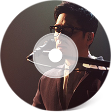
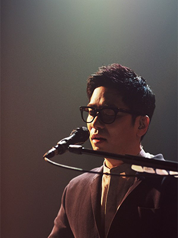
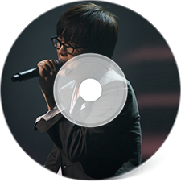
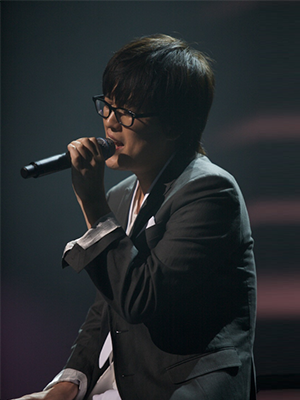
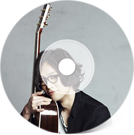
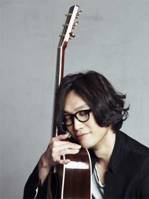
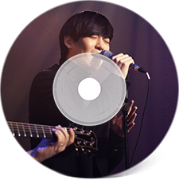
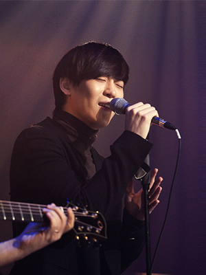
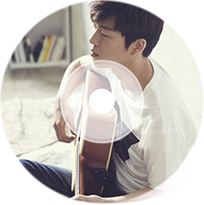
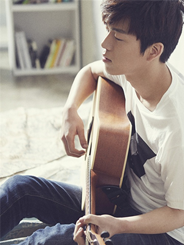

- ALL Artist
- 이적
- 김동률
- 토마스쿡
- 존박
- 곽진언


- 이적
- 본명 : 이동준
데뷔 앨범 : 1995년 패닉 1집 [달팽이]
솔로 데뷔 : 1999년 1집 앨범 [Dead End]
참여 경력 : 1997년 김동률과 '카니발' 활동 / 1999년 그룹 '긱스' 멤버
- 수상 경력
- 1996 골든디스크 본상
1997 골든디스크 본상
2008 제5회 한국대중음악상 올해의 음반상, 올해의 노래상, 최우수 팝 음반상, 최우수 팝 노래상
2009 GMF 어워즈 최고의 공연상, 최고의 순간상
2014 GMF 어워즈 최고의 공연상
2016 엠넷 아시안 뮤직 어워즈 베스트 OST 상
- 방송 경력
- 2004 KBS 쿨FM '이적의 드림온' 진행
2006 SBS TV '이적의 음악공간' 진행
2008-2009 SBS 파워FM '이적의 텐텐클럽' 진행
2013 Mnet '방송의 적'
2014 KBS 2TV '음악쇼', tvN '꽃보다 청춘'
2017 tvN '수업을 바꿔라'
2018 tvN '선다방'


- 김동률
- 데뷔 앨범 : 1994년 전람회 1집 [Exhibition]
솔로 데뷔 : 1998년 김동률 1집 앨범 [The Shadow of Forgetfulness]
참여 경력 : 1997년 이적과 '카니발' 활동 / 2010년 이상순과 'Verandah Project
- 수상 경력
- 1993 MBC 대학가요제 대상, 특별상 수상
1997 일간 스포츠 골든 디스크상 수상
2007 KBS 바른 언어상 수상
2008 제23회 골든디스크상 디스트부분 본상, Mnet KM 뮤직페스티벌 작사상
2009 제6회 한국대중음악상 최우수 팝 음반상
2015 제4회 가온차트 K-POP 어워드 올해의 가수상 음원부문 10월
- 방송 경력
- 1997 KBS 2FM '김동률의 인기가요' 진행
2005-2007 MBC TV '김동률의 FOR YOU' 진행
2007-2008 KBS 2FM '김동률의 뮤직 아일랜드' 진행


- 토마스 쿡
- 본명 : 정순용
데뷔 앨범 : 1999년 마리앤드메리 1집 [My Aunt Mary]
솔로 데뷔 : 2001년 토마스 쿡 1집 앨범 [Timetable]
참여 경력 : 1995년- 그룹 '마이앤트메리' 멤버
- 수상 경력
- 2015 제2회 한국대중음악상 올해의 모던 락 앨범
- 방송 경력
- 2011-2012 EBS 라디오 '청년시대 라디오드림 토마스 쿡입니다'


- 존박
- 데뷔 앨범 : 2012년 존박 EP [Knock]
- 수상 경력
- 2012 뷰티풀 민트 라이프 최고의 루키
2013 제2회 가온차트 K-POP 어워드 솔로부분 남자 올해의 신인상 / 제12회 KBS 연예대상 쇼오락부문 남자 신인상
- 방송 경력
- 2012 MBC MUSIC '그 여자 작사 그 남자 작곡' Season.1
2013 Mnet '방송의 적' / KBS TV '우리동네 예체능'
2014 SBS '도시의 법칙 in 뉴욕'
2016-2017 MBC TV '일밤-은밀하게 위대하게'
2016- SBS 파워FM '존박의 Music High'


- 곽진언
- 데뷔 앨범 : 2016년 곽진언 1집 [나랑갈래]
- 수상 경력
- 2015 GMF 어워즈 최고의 루키